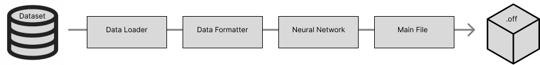
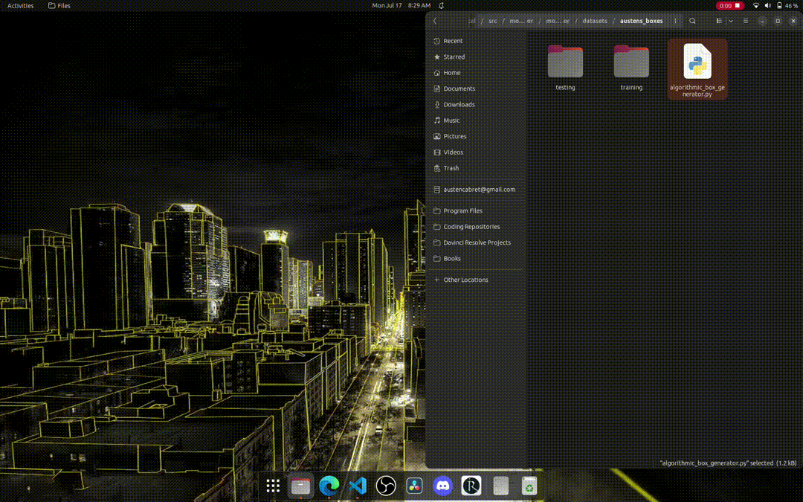
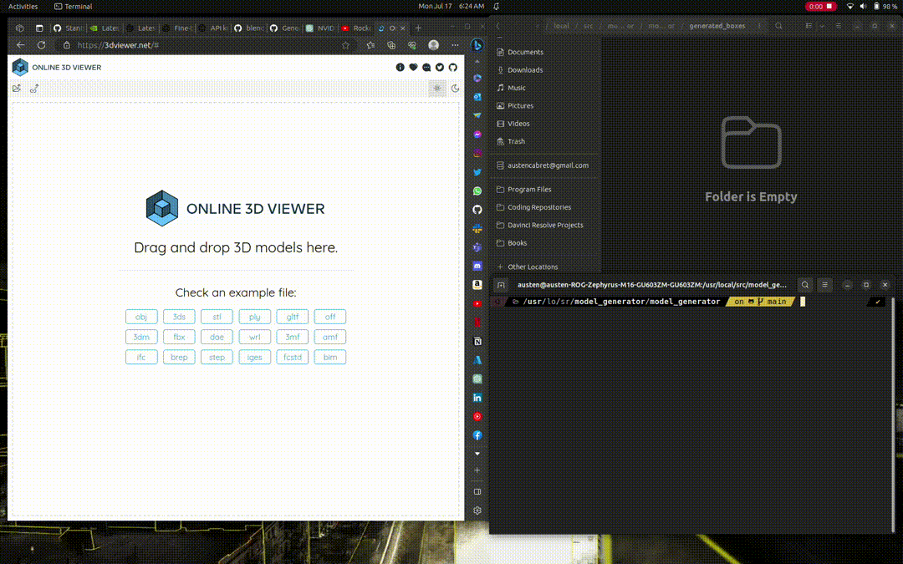
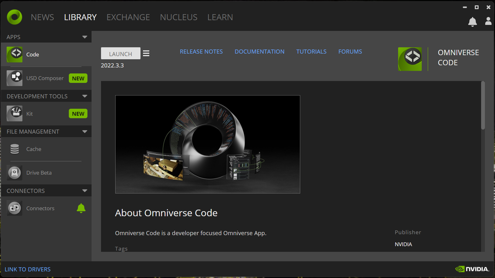
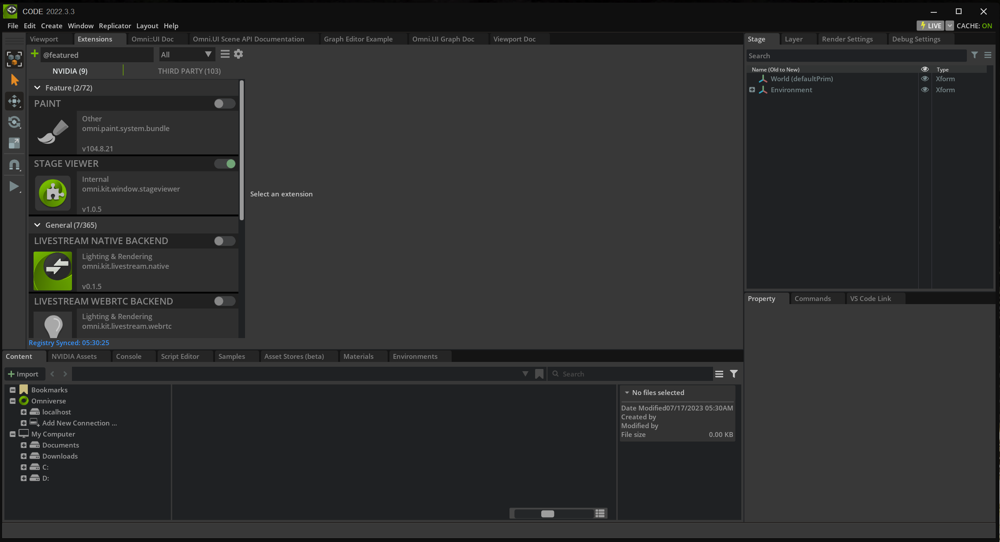
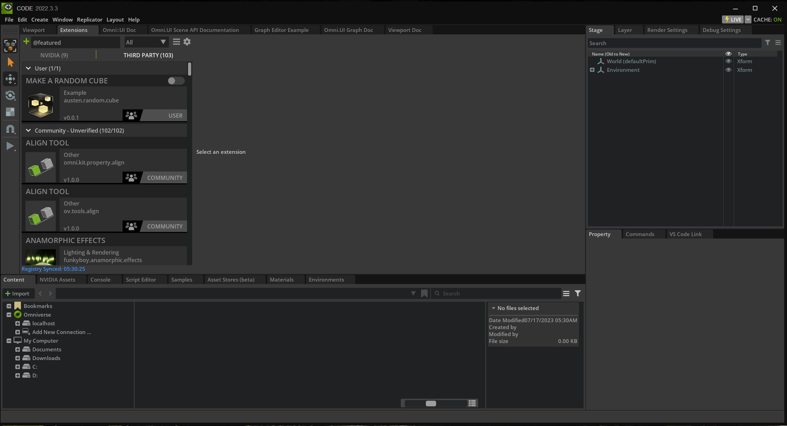
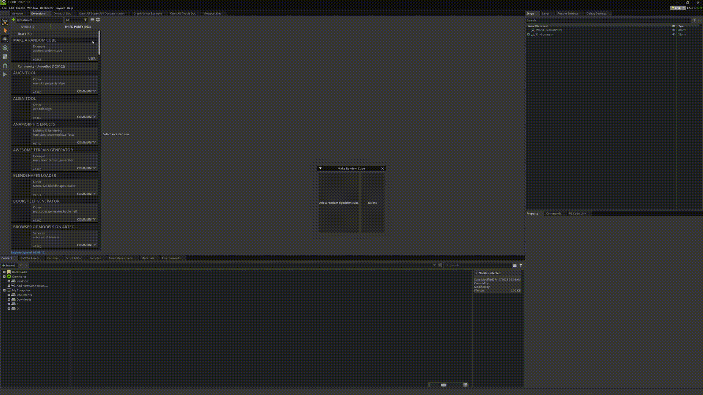

Feed Forward Neural Network python, pytorch and omniverse
The idea for this program came from interest in generative machine learning models. Human-beating results have been generated by computers in
chess, images and text. Naturally, I wonder if these results can be produced in another mode, 3d models. Not only will generative 3d models allow
greater creative expression but also save massive amounts of time. So, I made this project as a first step.

I prioritized simplicity. This lead to the choices of python, a feed forward neural network and .off boxes. The program is composed of the datasets,
a data loader, a data formatter, a neural network and the main file. Data is often a limiting factor for machine learning models. I didn't want the dataset
to be another variable. So, I made a super simple dataset of randomly generated boxes. This was synthetically made from an algorithm.

Example boxes are loaded from a directory, formatted into coordinate values, used to train the neural network and a .off box is exported. Given machine
learning models' superior results, it's important to create generative systems for virtually everything that humans produce. This is the path to automating
the economy. My focus is architecture. So, I'd like to develop these projects until they can generate entire cities.







{kind=link}